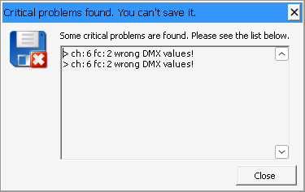
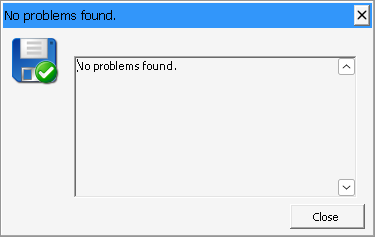

For: Full
File > Test Fixture (Ctrl+T) looks for the mistakes that would make the profile wrong in the Remake. The result stays open next to the editor; after a correction, Test again fills it again.


Left: problems found (the window's title: Critical problems found. You can't save it.). Right: No problems found.
| The message | What it means | What to do |
|---|---|---|
| No Channels found. | The profile has no channel. | Add the channels. |
| Function on PAN Channel not allowed! (and TILT, µPAN, µTILT, TriColor) |
A Pan, Tilt, Pan Fine, Tilt Fine, Cyan, Magenta, Yellow, Red, Green or Blue channel has presets. | Delete its presets, or give the channel the type it really has. |
| More than one PAN Channel found! (and TILT, µPan, µTilt) |
Two channels have the same of these types. | The second one is usually the fine one: Pan Fine / Tilt Fine. |
| TILT Channel missing! / PAN Channel missing! (and the fine ones) |
A Pan without a Tilt, or the other way round. | Add the missing one, or correct the types. |
| ch: 6 fc: 2 wrong DMX values! | In channel 6, preset 2: DMX from is bigger than DMX to, or the default is outside the range. | Correct the three values on the preset's page. |
| ch: 6 fu: 2 & 3 dmx values are in same range! | Two presets of channel 6 cover the same values. | Make the ranges follow each other without overlapping. |
| No Fixture name! / No Fixture manufacturer! | The field is empty. | Fill it on Basic Informations. |
The channels and presets are counted from 1, as in the list (ch: 6 = #6).
File > Save Fixture (Ctrl+S) runs Test first. With problems, the Test window shows them and the profile is not saved; without problems, it is saved at once and the status bar says Saved.
.lfi2. For an old .lfi that was opened, Save asks where to save it,
with the same name as .lfi2 proposed; the .lfi stays as it was.